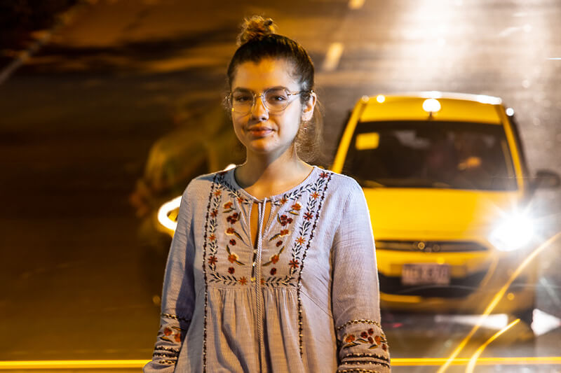
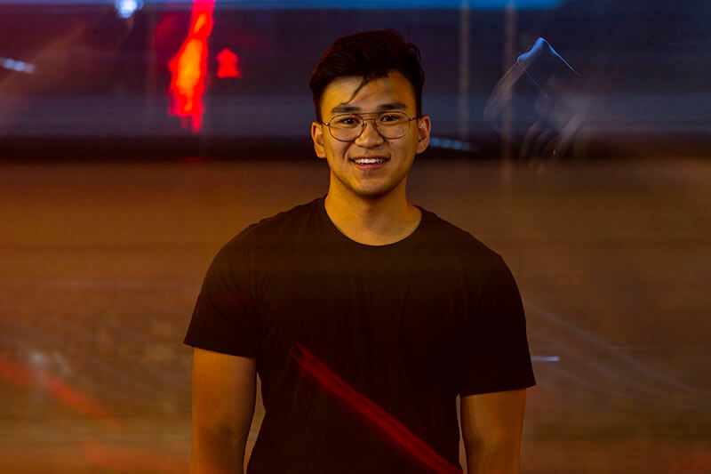
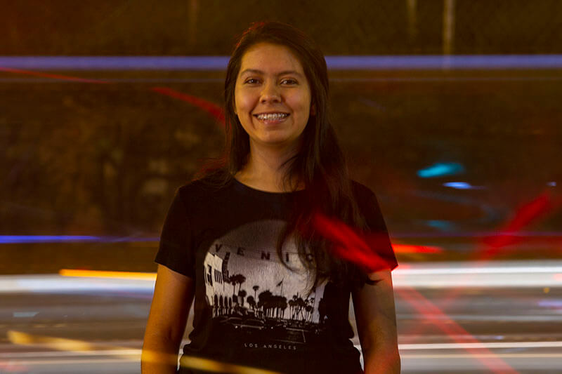
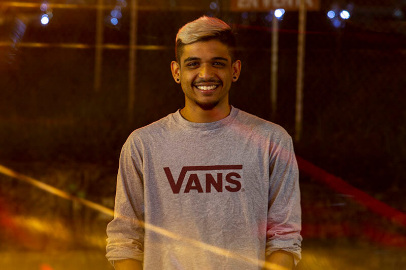
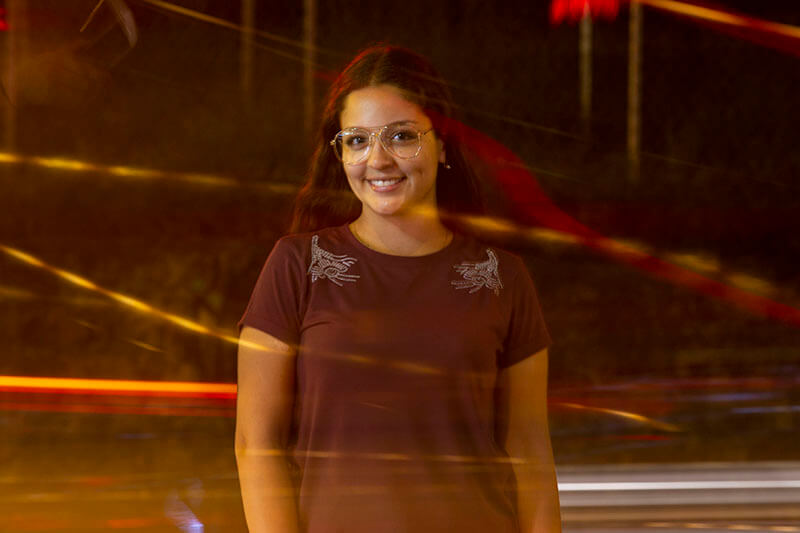

Todos
Foto/Video
Reporteros
Interactivo
Instructores
Productores de campo

Diane Adame
Reportera
¡Hola! Me llamo Diane y soy estudiante de periodismo y políticas públicas en mi último año. La idea de mi próxima comida me mantiene andando y si tuviera que describir mi vida en tres palabras, serían nombres, titulares, y fechas límites.

Kailyn Akers
Diseñadora
¡Hola! Soy Kailee y estoy en mi último año en la escula de MEJO. El diseño es mi cosa. Si tuviera una máquina del tiempo, habría hecho los videos de "cocina pequeña" primero.

Jason Armond
Camarógrafo
Hola, soy Jason Armond, estudiante de último año de medios de comunicación y periodismo, con énfasis en periodismo fotográfico y de video y diseño gráfico. Crear contenido visual que sea atractivo y esté enraizado en la narración es lo que me impulsa. Un dato curioso acerca de mí es que nunca he tenido una mascota. Cuando finalmente tenga una mascota, será un Bulldog Inglés.

Abby Cantrell
Camarógrafa
Soy Abby, estudiante de periodismo y ciencia política en mi tercer año. Me encantan los perros, las siestas y la pizza.

María Alejandra Cardona Aizpurua
Productora de Campo
Soy María Alejandra Cardona Aizpurúa, estudiante de periodismo y comunicación social de Medellín. Estoy enamorada de la cultura de mi país, y creo en el cambio. Me apasiona contar historias con una cámara o con palabras escritas y me encanta aprender y conocer el mundo viajando.

Chris Carmichael
Instructor de Foto y Video
Soy un videógrafo con sede en Birmingham, Alabama. Como resultado de muchas, muchas coincidencias y simplemente buena fortuna, he podido trabajar detrás de una cámara en todas partes del mundo con mucha gente maravillosa. Cuando no estoy detrás de una cámara, estoy practicando mis chistes de papá frente a una audiencia cautiva.
Bryan Cereijo
Camarógrafo
Soy Bryan Cereijo, un estudiante de postgrado de comunicación visual. Soy un narrador visual Cubano-Estadounidense de Miami, FL. Me interesan específicamente las narrativas que se tratan del deporte y la cultura.

Nash Consing
Fotógrafo
Soy un estudiante de MEJO en mi segundo año y tambien estudio comunicaciones. Amante de Frank Ocean y de todos los perros. Hola a mis perritos Xavier, Yoda y Jerome.


Landon Cooper
Camarógrafo
Hola a todos, soy Landon, y soy fotógrafo y videógrafo. No tengo hijos, pero soy sublime en los chistes de papá. Me encanta tomar largos paseos por la playa, hacer retratos y contar historias.

Pat Davison
Productor Ejecutivo, Instructor de Foto y Video
Soy Pat, profesor y director de proyectos documentales para la escuela. Este es el décimo proyecto internacional que he liderado. Me encanta ayudar a los estudiantes a crecer como periodistas y como ciudadanos del mundo al abordar temas importantes en otros países.

Sally Dillon
Diseñadora
Soy Sally, estudiante de diseño gráfico y el frances. Estoy en mi último año y soy una persona mayor en el corazón. Soy una acaparadora de papel, y mi color favorito es el amarillo mantequilla.
")
Catie Dull
Fotógrafa
Soy Catie, estudiante de periodismo de fotografía y video en mi último año. Amo a mi gato gordo y a mi hogar en Wrightsville Beach. ¡Soy una muchacha rara que adora viajar con mi cámara alrededor de mi cuello!

Ashton Eleazer
Camarógrafa
Soy Ashton, estoy estudiando periodismo de fotografía y video y el arte dramático. Me encanta tomar fotografías analógicas, mantener un diario para mis futuros recuerdos, y hacer viajes espontáneos a todas partes, desde el mercado local hasta el Himalaya.

Brooke Fisher
Desarolladora Web Principal
Soy Brooke, estudiante de multimedia interactiva en mi último año. Cuando no estoy programando, puedes encontrarme escribiendo, cocinando o animando al equipo de baloncesto UNC desde la sección de la banda.

Haley France
Camarógrafa
Mi nombre es Haley, y estudio medios de comunicación y periodismo con un título menor de justicia social y económica. Me encanta ser DJ en nuestra estación de radio para estudiantes y soy un profesional en hacer juegos de palabras.


Tenley Garrett
Camarógrafa
Soy un estudiante de comunicación visual en mi último año que cree que todos deberían tomarse un tiempo fuera de la escuela antes de graduarse. Seriamente. Simplemente hazlo. Disfruto de viajes sola a conciertos, siestas en medio del día y siendo vulnerable con las personas.
Xiaoke Ji
Diseñadora
Soy Xiaoke, estudiante de diseño de medios de comunicación en mi último año. Mi apodo es Arya porque es mi alter ego en Juego de Tronos y también porque solo las personas que hablan mandarín saben cómo pronunciar mi nombre. Mi campo de trabajo favorito es la animación y el diseño de juegos.

Alex Kormann
Fotógrafo Principal
¡Hola! Soy Alex, estudiante de foto-periodismo e historia de New Jersey. Me encanta Star Wars, la comida picante y los perros. Todo mi trabajo es en memoria de mi padre, Russ.

Lyric Lin
Diseñadora
¡Hola! Soy Lyric, estudiante de publicidad y relaciones públicas en mi tercer año. Me considero una "Granola tipo A": de espíritu libre pero con un horario. Amante de los perritos, el color amarillo y los atardeceres de algodón de azúcar.
Patty Matos
Coordinadora de Relaciones Públicas, Traductora
Soy Patty, estudiante de último año de relaciones públicas y justicia social y económica de Caracas, Venezuela. Soy la tuitera residente del equipo, una implacable Escorpio y una ávida amante de la música pop. Tráeme chucherías crujientes, por favor.

Patsy Montesinos
Reportera, Traductora
Soy Patsy, la chica que se extiende a ambos lados de las fronteras pero también ama la mezcla de sus culturas. Soy estudiante de medios de comunicación y periodismo con especialización en los estudios latinos. Pintora, bailarína, jugadora de fútbol y mamá de Rayo (mi caballo).

Peggy Mullin
Camarógrafa
¡Hola! Soy Peggy, estudiante de ciencias ambientales y nerd de foto/video. Me gustan muchas cosas, incluyendo (pero no limitado a) las algas, la música, los perros y el increíble poder de contar historias.
Juan David Ochoa Jiménez
Productor de Campo
¡Hola! Soy Juan, un estudiante de comunicación social. Tengo 20 años y soy un amante de la política y la historia. Tengo tres gatos hermosos (si tuviera una casa más grande, ¡tendría más!) Me gusta aprender sobre TODO, y por eso me gusta conocer gente de otros países. También me gusta bailar, jugar videojuegos y pasear por la ciudad.

Sara Pequeño
Reportera
Mi nombre es Sara y soy estudiante de reportaje y ciencias políticas en mi último año. Sí, mi appellido es "pequeño". Sí, mido 1,5m.

Andie Rea
Camarógrafa
Soy una creadora de medios visuales inspiradq por el poder de la historia para moldear ideas y crear cambios. Disfruto de las aventuras con mi familia y me gusta probar nuevas comidas.

Margarita María Restrepo
Productora de Campo
Soy estudiante de periodismo en Medellín, Colombia. Profundamente apasionada por los estudios de género, me encontrarás en la calle hablando con mujeres de diferentes orígenes, o en mi estudio fotográfico tomándoles fotografías y expresando lo hermosas y empoderadoras que creo que son sus historias.


Zayrha Rodriguez
Camarógrafa, Traductora
Nací en Bogotá, Colombia, y cuando tenía 14 años me mudé a Miami. Ahora soy estudiante de periodismo de fotografía y video con una historia menor, en mi tercer año. En mi tiempo libre, me gusta bailar con Que Rico, acariciar a todos los perritos y comer papitas.

Carlos Salas
Diseñador Principal, Traductor
Hola, soy Carlos, un diseñador de UX/UI nacido en San Cristóbal, Venezuela y criado en Carolina del Norte. Cuando no estoy creando cosas cool para las redes del internet, probablemente estoy acariciando a mi perro, Jagger. Mi modelo a seguir es Danny Phantom.


Amy Townsend
Desarolladora Web
¡Hola! Soy Amy, una desarrolladora de front-end, estudiando la multimedia interactiva y ciencias de la información. Me gusta mucho bailar, cantar y todo tipo de rompecabezas y juegos. Mi lugar feliz es viendo la película Avatar: The Last Airbender con una cobija cómoda y con mi gato Finn dormido en mis piernas.

Laura Trujillo Arango
Productora de Campo
Mi nombre es Laura, soy estudiante de primer año de comunicación social y periodismo en la UPB. Realmente amo a los perros, y tengo 18 años (hasta abril, al menos). Aparte del inglés y el español, también hablo portugués. Realmente amo y disfruto escribiendo, leyendo y aprendiendo cosas nuevas diariamente.

Martin Villaneda Gomez
Productor de Campo
Soy Martín Villaneda, estudiante colombiano de periodismo en la Universidad Pontificia Bolivariana de Medellín, y soy fotoperiodista. Hablo cuatro idiomas: inglés, francés, italiano y español, mi idioma nativo. Tengo 20 años y algún día ganaré el premio de World Press Photography.
Maria Elena Vizcaino
Reportera, Traductora
Soy una periodista nacida y criada en Caracas, Venezuela. En el segundo año de la escuela secundaria, me mudé a Miami, Florida, y ahora he cambiado la playa y el calor por las montañas y la brisa fresca de Carolina del Norte. Si no estoy haciendo preguntas, búscame comiendo arepas o limpiando mi casa compulsivamente.